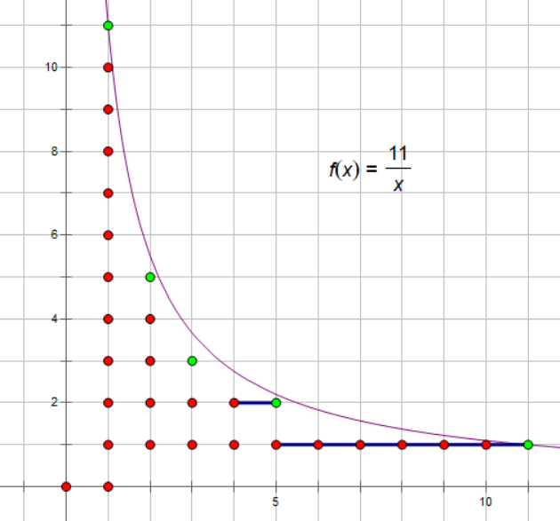
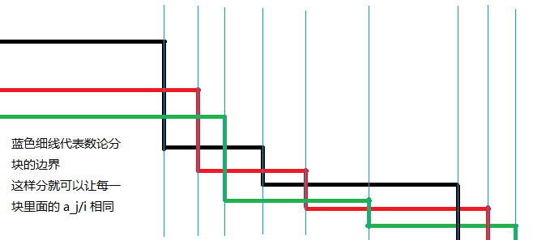

Sqrt decomposition
数论分块可以快速计算一些含有除法向下取整的和式（即形如 \sum_{i=1}^nf(i)g(\left\lfloor\dfrac ni\right\rfloor) 的和式）。当可以在 O(1) 内计算 f(r)-f(l) 或已经预处理出 f 的前缀和时，数论分块就可以在 O(\sqrt n) 的时间内计算上述和式的值。
它主要利用了富比尼定理（Fubini's theorem），将 \left\lfloor\dfrac ni\right\rfloor 相同的数打包同时计算。
富比尼定理
又称“算两次”，以意大利数学家圭多·富比尼（Guido Fubini）命名。 富比尼定理的积分形式：只要二重积分 \int\int |f(x,y)|dxdy 有界，则可以逐次计算二重积分，并且可以交换逐次积分的顺序。 积分号也是特殊的求和号，因此在一般求和中，富比尼定理往往呈现为更换计数顺序，即交换两个求和号。 组合数学中的富比尼定理表现为，用两种不同的方法计算同一个量，从而建立相等关系。
例如这里的双曲线下整点的图片：

图中共分为了 5 块，这 5 块整点的最大纵坐标都相同。如果统计整点的个数，可以从纵向计数改为横向计数，直接计算 5 个矩形即可。
引理 1¶
略证：
关于证明最后的小方块
QED 是拉丁词组“Quod Erat Demonstrandum”（这就是所要证明的）的缩写，代表证明完毕。现在的 QED 符号通常是 \blacksquare 或者 \square。（维基百科）
引理 2¶
|V| 表示集合 V 的元素个数
略证：
对于 d\leq \left\lfloor\sqrt{n}\right\rfloor，\left\lfloor\frac{n}{d}\right\rfloor 有 \left\lfloor\sqrt{n}\right\rfloor 种取值
对于 d> \left\lfloor\sqrt{n}\right\rfloor，有 \left\lfloor\frac{n}{d}\right\rfloor\leq\left\lfloor\sqrt{n}\right\rfloor，也只有 \left\lfloor\sqrt{n}\right\rfloor 种取值
综上，得证
数论分块结论¶
对于常数 n，使得式子
成立的最大的满足 i\leq j\leq n 的 j 的值为 \left\lfloor\dfrac n{\lfloor\frac ni\rfloor}\right\rfloor。即值 \left\lfloor\dfrac ni\right\rfloor 所在的块的右端点为 \left\lfloor\dfrac n{\lfloor\frac ni\rfloor}\right\rfloor。
证明过程
令 k=\left\lfloor\dfrac ni\right\rfloor，可以知道 k\leq\dfrac ni。
数论分块的过程大概如下：考虑和式
\sum_{i=1}^nf(i)\left\lfloor\dfrac ni\right\rfloor
那么由于我们可以知道 \left\lfloor\dfrac ni\right\rfloor 的值成一个块状分布（就是同样的值都聚集在连续的块中），那么就可以用数论分块加速计算，降低时间复杂度。
利用上述结论，我们先求出 f(i) 的 前缀和（记作 s(i)=\sum_{j=1}^i f(j)），然后每次以 [l,r]=[l,\left\lfloor\dfrac n{\lfloor\frac ni\rfloor}\right\rfloor] 为一块，分块求出贡献累加到结果中即可。
伪代码如下：
最终得到的 result 即为所求的和式。
例题：UVa11526 H(n)
题意：T 组数据，每组一个整数 n。对于每组数据，输出 \sum_{i=1}^n\left\lfloor\dfrac ni\right\rfloor。
思路：如上推导，对于每一块相同的 \left\lfloor\dfrac ni\right\rfloor 一起计算。时间复杂度为 O(T\sqrt n)。
参考实现
1 2 3 4 5 6 7 8 9 10 11 | |
N 维数论分块
求含有 \left\lfloor\dfrac {a_1}i\right\rfloor、\left\lfloor\dfrac {a_2}i\right\rfloor\cdots\left\lfloor\dfrac {a_n}i\right\rfloor 的和式时，数论分块右端点的表达式从一维的 \left\lfloor\dfrac ni\right\rfloor 变为 \min\limits_{j=1}^n\{\left\lfloor\dfrac {a_j}i\right\rfloor\}，即对于每一个块的右端点取最小（最接近左端点）的那个作为整体的右端点。可以借助下图理解：

一般我们用的较多的是二维形式，此时可将代码中 r = n / (n / i) 替换成 r = min(n / (n / i), m / (m / i))。
习题¶
-
CQOI2007 余数求和（需要一点转化和特判）
-
UVa11526 H(n)（几乎可以当做模板题）
-
POI2007 ZAP-Queries（数论分块一般配合 莫比乌斯反演 用以进一步降低复杂度；本题需要用到 [n=1]=\sum_{d|n}\mu(n) 这一条莫反结论）
build本页面最近更新：，更新历史
edit发现错误？想一起完善？ 在 GitHub 上编辑此页！
people本页面贡献者：OI-wiki
copyright本页面的全部内容在 CC BY-SA 4.0 和 SATA 协议之条款下提供，附加条款亦可能应用